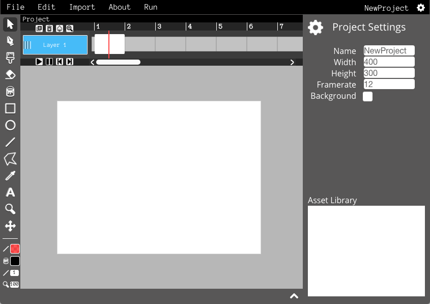

In this tutorial, you will learn how to make simple frame-by-frame animations!
Let's get started by creating a few blank frames to draw in. If you hover your mouse over an empty space on the timeline, an icon will appear showing that you can create a new frame. Click this icon and a new frame will appear!
Now that there's a bunch of blank frames, click on the first one. This is where you'll draw the first frame of your animation.
Now just do the same for the rest of the empty frames to finish your animation.
Tip: Onion skinning
Enter to preview
Before you export your animation, you can click "Run" to see a preview of what it will look like.
To export your animation as an animated GIF, click the "File" menu and select "Export Animated GIF".
To export your animation as webpage, click the "File" menu and select "Export Webpage".